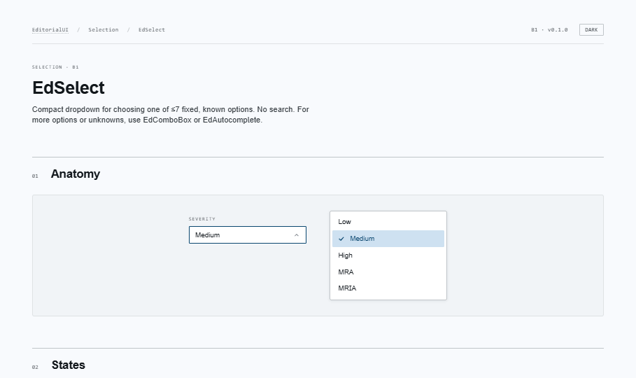
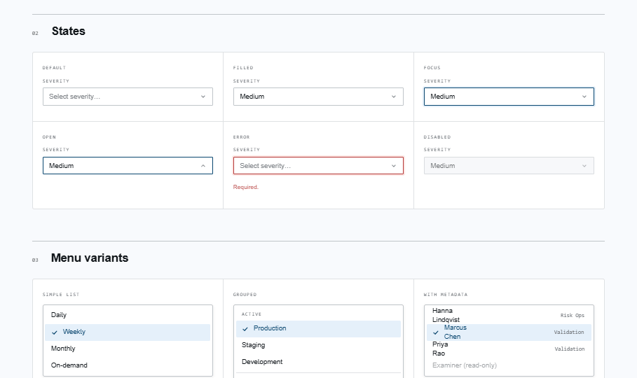
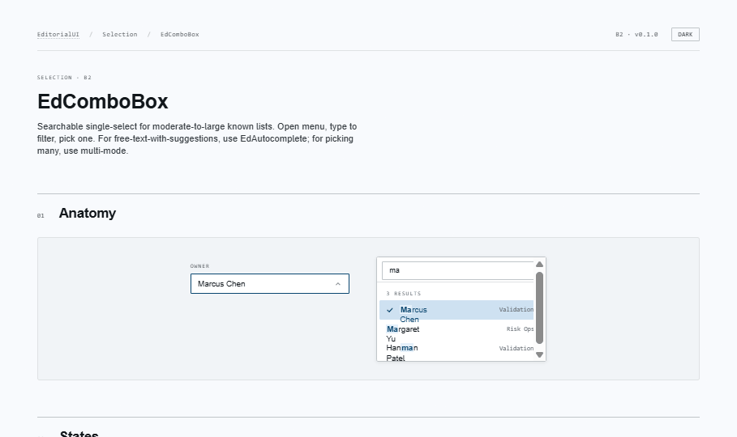
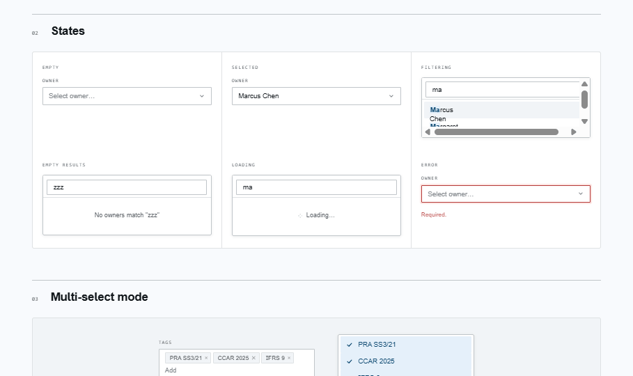
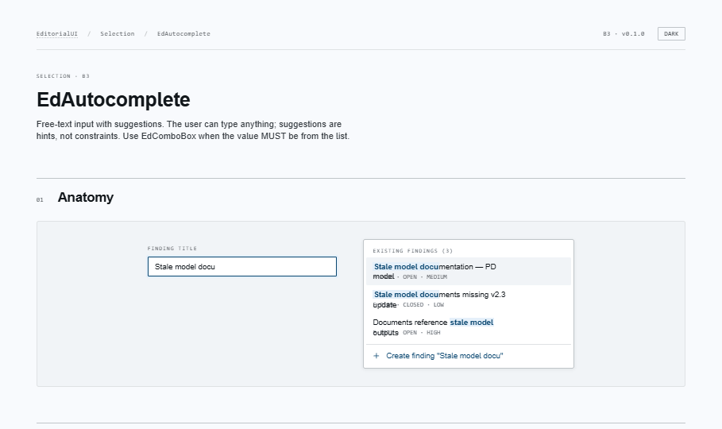
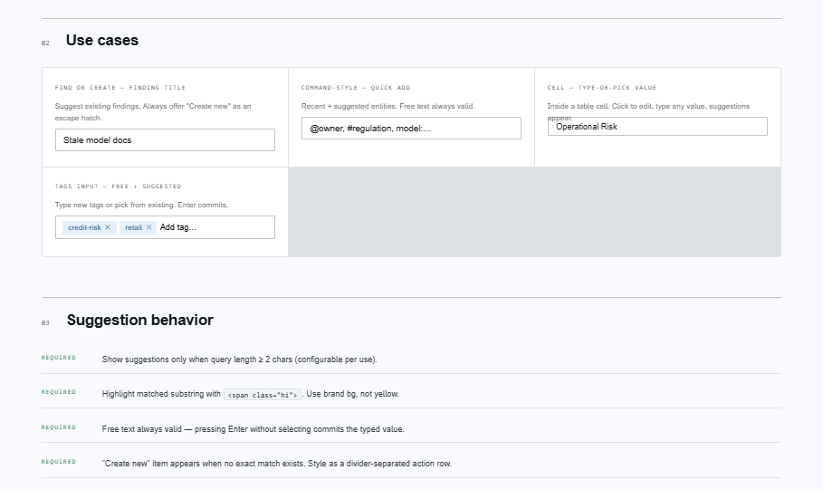

EditorialUI · Implementation
Three components for picking from a list: EdSelect (compact, fixed
options), EdComboBox (searchable single / multi, with async), and
EdAutocomplete (free text + suggestions). Plus a private
_internal/ module that the two combobox-shaped components share.
apostlerisk. Assumes Bundles 1+2 already merged; covers the _internal/ module, async-loader patterns, and migration off react-select.
open ↗
Compact dropdown for ≤7 fixed options. Sizes sm/md/lg, groups + separators, item metadata, full ARIA from Radix Select (type-ahead, arrow nav, item indicators).


Searchable single / multi-select. Sync, async with debouncing + in-flight cancellation, recents shown when query is empty, tag-style multi with removable chips. Built on Radix Popover + a hand-rolled listbox.


Free-text input with suggestions. Free text always valid — Enter without a highlighted option commits the typed string. Optional "Create new" action when no exact match. Substring highlighting, async + debouncing.


Shared keyboard-nav hook (useListboxNav), filter + highlight + debounce utilities, and the :global() menu chrome styles. Not re-exported from the public barrel — ESLint should block consumer imports.
| Situation | Reach for |
|---|---|
| 2 known options | EdRadioGroup or EdSwitch (Bundle 2) |
| ≤7 fixed options, no need to type | EdSelect |
| Larger known list — value MUST be from the list | EdComboBox |
| Tag-style multi-select from a known list | EdComboBox multiple |
| Free text with hints (value can be anything) | EdAutocomplete |
| Find existing OR create new | EdAutocomplete with allowCreate |
@radix-ui/react-selectEdSelect@radix-ui/react-popoverEdComboBox, EdAutocomplete (positioning only — listbox + ARIA hand-rolled)useListboxNav is the single sourceEvery combobox-shaped component reuses it. Future date pickers + mention menus must too.{ value, label, meta?, group?, disabled? }. No <Option> children. No loadOptions / cacheOptions zoo.EdComboBox multiple emits string[]. The trigger renders selected values as removable, focusable tag chips.EdComboBox constrains values to its list. EdAutocomplete doesn't — suggestions are hints, not constraints..edmenu__hi. Screen readers read the full label, not the wrapped markup.EdTag, EdStatusBadge, EdChip,
EdDivider, EdProgressMeter, EdCircularProgress.
Once EdTag lands, the multi-mode trigger chips in EdComboBox
should be replaced with it — see the // TODO(bundle-4) note in the
Claude Code prompt.